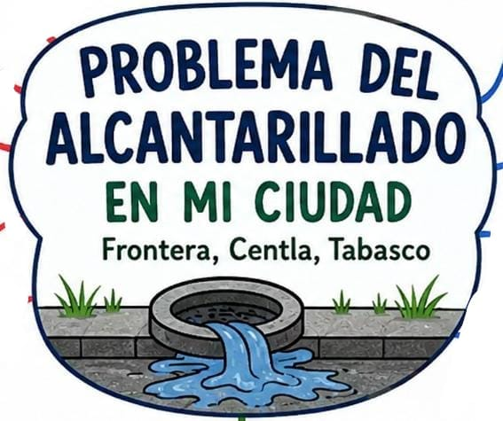

3. Diagnóstico
- Alcantarillas tapadas por basura.
- Inundaciones frecuentes en calles y viviendas.
- Malos olores provocados por aguas sucias.
- Falta de mantenimiento del drenaje.
- Problemas de salud ocasionados por la contaminación.
Propuesta para mejorar el sistema de alcantarillado mediante la participación ciudadana y el uso de tecnologías emergentes.
Conoce el ProyectoBienvenido a este proyecto desarrollado durante los módulos 22 y 23 de Prepa en Línea-SEP. El propósito es analizar las malas condiciones del alcantarillado en Frontera, Centla, Tabasco, identificar sus principales causas y proponer soluciones apoyadas en la participación ciudadana y el uso de tecnologías emergentes que contribuyan al bienestar de la comunidad.
En Frontera, Centla, Tabasco, las malas condiciones del alcantarillado provocan inundaciones, contaminación, malos olores y riesgos para la salud de la población.
Tirar basura en las calles y alcantarillas.
Falta de mantenimiento del sistema de drenaje.
Crecimiento de la población y mayor demanda del sistema de alcantarillado.
Temporadas de lluvia intensas que saturan el drenaje.

Problemas de salud como enfermedades respiratorias, infecciones y dengue.
Malos olores y acumulación de aguas sucias.
Inundaciones en calles y viviendas en temporada de lluvias.
Mala imagen urbana y afectación a la calidad de vida de los habitantes.
Mejorar el funcionamiento del sistema de alcantarillado en Frontera, Centla, Tabasco, mediante acciones de limpieza, mantenimiento y concientización ciudadana para disminuir la contaminación, prevenir inundaciones y mejorar la calidad de vida.
Lugar: Frontera, Centla, Tabasco.
Población beneficiada: Habitantes de Frontera, familias, comerciantes, estudiantes y trabajadores.
Ámbitos afectados:
Sensores en alcantarillas para monitorear el nivel del agua y detectar obstrucciones.
Inteligencia Artificial (IA)
Análisis de datos y predicción de zonas con mayor riesgo de inundación.
Drones
Inspección de alcantarillas y zonas de difícil acceso.
Sistemas de Información Geográfica (SIG)
Mapas para ubicar zonas críticas y planear acciones.
Aplicación móvil
Reportes ciudadanos sobre alcantarillas tapadas o daños en el drenaje.
| Actividad | Periodo |
|---|---|
| Campañas de concientización | Junio 2026 |
| Difusión de información | Junio 2026 |
| Organización de brigadas | Junio 2026 |
| Limpieza de calles y alcantarillas | Julio 2026 |
| Supervisión y evaluación | Julio 2026 |
Duración total: Junio - Julio 2026
Este proyecto busca generar cambios positivos en la comunidad mediante la participación ciudadana, el uso de tecnologías emergentes y el trabajo conjunto con las autoridades. La implementación de las estrategias propuestas permitirá mejorar el sistema de alcantarillado, reducir riesgos sanitarios y ambientales, y construir una comunidad más limpia, saludable y sostenible.